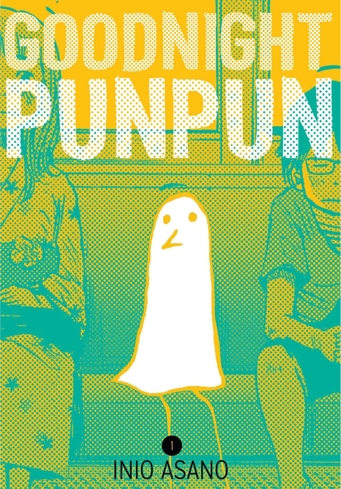
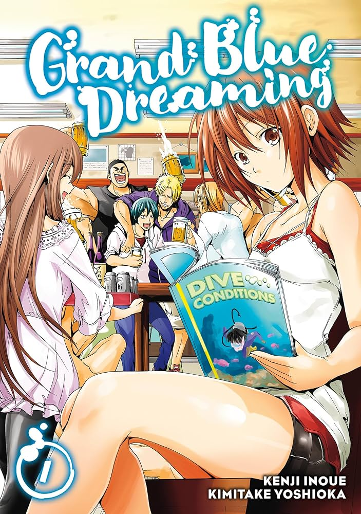
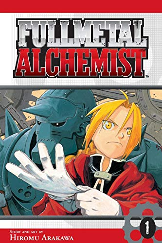
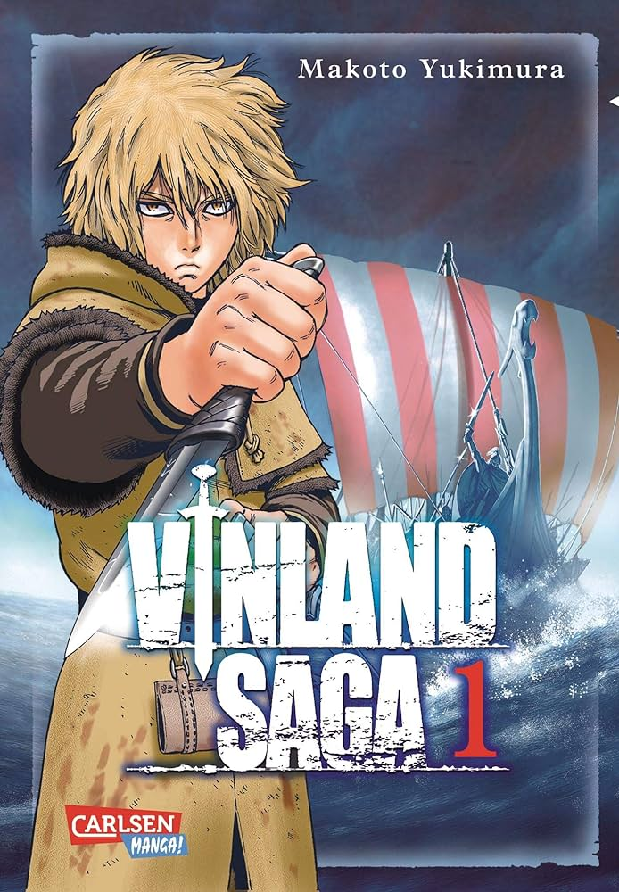
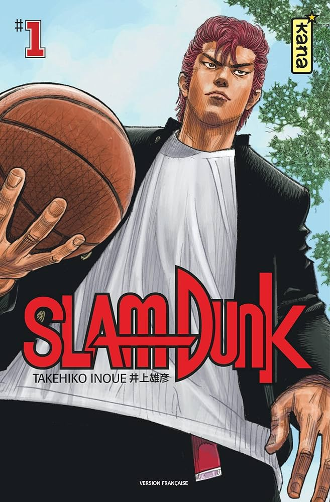
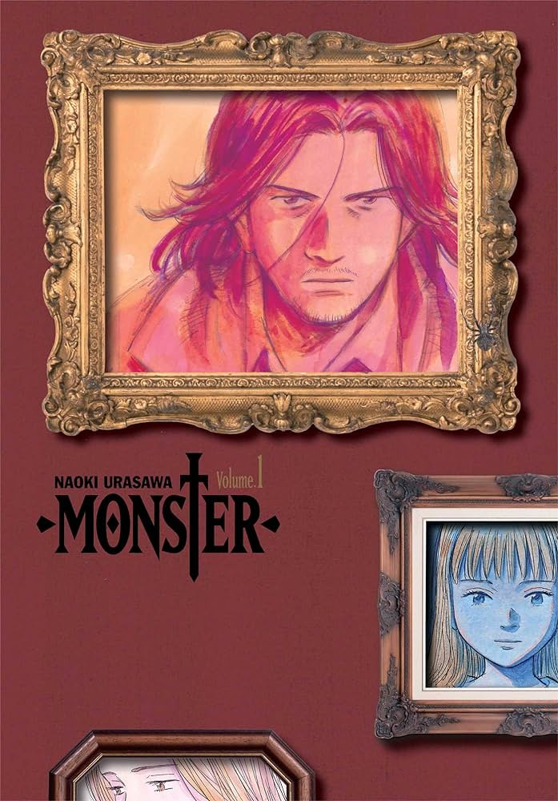
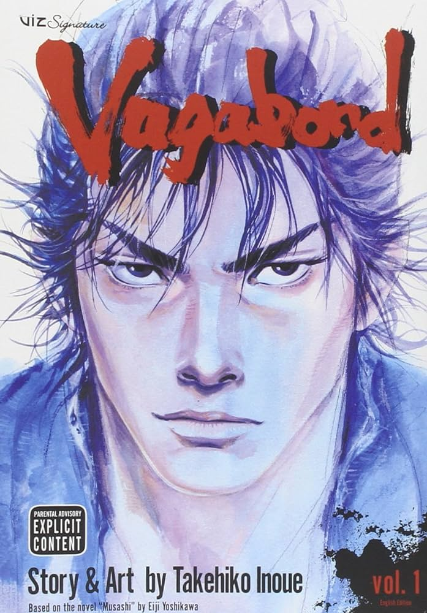
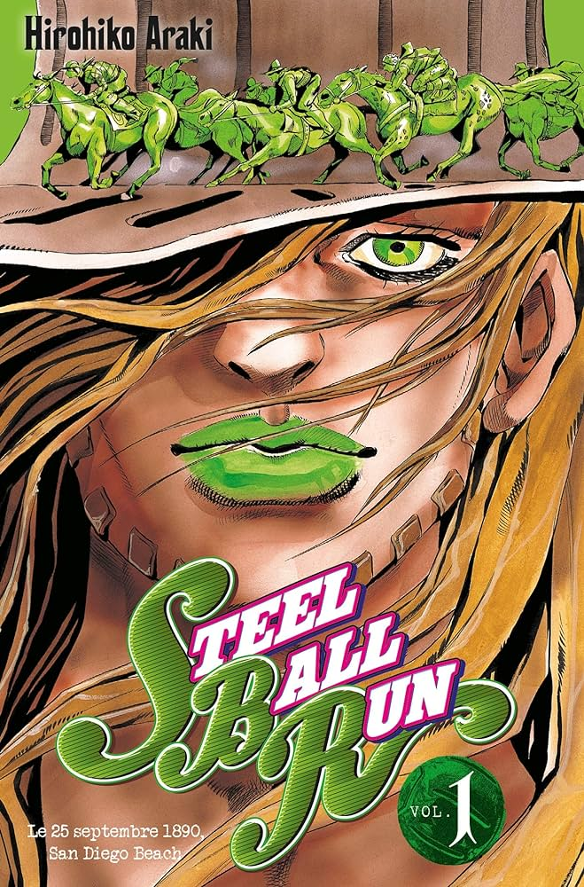

The top 10 Manga
These are the top 10 Manga as of 2023.

Author:
Inio AsanoGenre:
Drama, Slice of lifeRelease day:
March 15, 2007Anime Adaptation:
NoDescription:
Punpun Onodera is a normal 11-year-old boy living in Japan. Hopelessly idealistic and romantic, Punpun begins to see his life take a subtle—though nonetheless startling—turn to the adult when he meets the new girl in his class, Aiko Tanaka. It is then that the quiet boy learns just how fickle maintaining a relationship can be, and the surmounting difficulties of transitioning from a naïve boyhood to a convoluted adulthood. When his father assaults his mother one night, Punpun realizes another thing: those whom he looked up to were not as impressive as he once thought. As his problems increase, Punpun's once shy demeanor turns into voluntary reclusiveness. Rather than curing him of his problems and conflicting emotions, this merely intensifies them, sending him down the dark path of maturity in this grim coming-of-age saga.

Author:
Kenji InoueGenre:
ComedyRelease day:
April 7, 2014Anime Adaptation:
YesDescription:
Among the seaside town of Izu's ocean waves and rays of shining sun, Iori Kitahara is just beginning his freshman year at Izu University. As he moves into his uncle's scuba diving shop, Grand Blue, he eagerly anticipates his dream college life, filled with beautiful girls and good friends.But things don't exactly go according to plan. Upon entering the shop, he encounters a group of rowdy, naked upperclassmen, who immediately coerce him into participating in their alcoholic activities. Though unwilling at first, Iori quickly gives in and becomes the heart and soul of the party. Unfortunately, this earns him the scorn of his cousin, Chisa Kotegawa, who walks in at precisely the wrong time. Undeterred, Iori still vows to realize his ideal college life, but will things go according to plan this time, or will his situation take yet another dive?

Author:
Hiromu ArakawaGenre:
Action, Adventure, Drama, FantasyRelease day:
July 12, 2001Anime Adaptation:
YesDescription:
Alchemists are knowledgeable and naturally talented individuals who can manipulate and modify matter due to their art. Yet despite the wide range of possibilities, alchemy is not as all-powerful as most would believe. Human transmutation is strictly forbidden, and whoever attempts it risks severe consequences. Even so, siblings Edward and Alphonse Elric decide to ignore this great taboo and bring their mother back to life. Unfortunately, not only do they fail in resurrecting her, they also pay an extremely high price for their arrogance: Edward loses his left leg and Alphonse his entire body. Furthermore, Edward also gives up his right arm in order to seal his brother's soul into a suit of armor. Years later, the young alchemists travel across the country looking for the Philosopher's Stone, in the hopes of recovering their old bodies with its power. However, their quest for the fated stone also leads them to unravel far darker secrets than they could ever imagine.

Author:
Makoto YukimuraGenre:
Action, Adventure, DramaRelease day:
April 13, 2005Anime Adaptation:
YesDescription:
Thorfinn, son of one of the Vikings' greatest warriors, is among the finest fighters in the merry band of mercenaries run by the cunning Askeladd, an impressive feat for a person his age. However, Thorfinn is not part of the group for the plunder it entails—instead, for having caused his family great tragedy, the boy has vowed to kill Askeladd in a fair duel. Not yet skilled enough to defeat him, but unable to abandon his vengeance, Thorfinn spends his boyhood with the mercenary crew, honing his skills on the battlefield among the war-loving Danes, where killing is just another pleasure of life. One day, when Askeladd receives word that Danish prince Canute has been taken hostage, he hatches an ambitious plot—one that will decide the next King of England and drastically alter the lives of Thorfinn, Canute, and himself. Set in 11th-century Europe, Vinland Saga tells a bloody epic in an era where violence, madness, and injustice are inescapable, providing a paradise for the battle-crazed and utter hell for the rest who live in it.

Author:
Takehiko InoueGenre:
SportsRelease day:
September 18, 1990Anime Adaptation:
YesDescription:
Hanamichi Sakuragi, a tall, boisterous teenager with flame-red hair and physical strength beyond his years, is eager to put an end to his rejection streak of 50 and finally score a girlfriend as he begins his first year of Shohoku High. However, his reputation for delinquency and destructiveness precedes him, and most of his fellow students subsequently avoid him like the plague. As his first day of school ends, he is left with two strong thoughts: "I hate basketball" and "I need a girlfriend." Haruko Akagi, ignorant of Hanamichi's history of misbehavior, notices his immense height and unwittingly approaches him, asking whether or not he likes basketball. Overcome by the fact that a girl is speaking to him, the red-haired giant blurts out a yes despite his true feelings. At the gym, Haruko asks if he can do a slam dunk. Though a complete novice, Hanamachi palms the ball and makes the leap...but overshoots, slamming his head into the backboard. Amazed by his near-inhuman physical abilities, Haruko quickly notifies the school's basketball captain of his feat. With this, Hanamichi is unexpectedly thrust into a world of competition for a girl he barely knows, but he soon discovers that there is perhaps more to basketball than he once thought.

Author:
Naoki UrasawaGenre:
Drama, MysteryRelease day:
December 5, 1994Anime Adaptation:
YesDescription:
Kenzou Tenma, a renowned Japanese neurosurgeon working in post-war Germany, faces a difficult choice: to operate on Johan Liebert, an orphan boy on the verge of death, or on the mayor of Düsseldorf. In the end, Tenma decides to gamble his reputation by saving Johan, effectively leaving the mayor for dead. As a consequence of his actions, hospital director Heinemann strips Tenma of his position, and Heinemann's daughter Eva breaks off their engagement. Disgraced and shunned by his colleagues, Tenma loses all hope of a successful career—that is, until the mysterious killing of Heinemann gives him another chance. Nine years later, Tenma is the head of the surgical department and close to becoming the director himself. Although all seems well for him at first, he soon becomes entangled in a chain of gruesome murders that have taken place throughout Germany. The culprit is a monster—the same one that Tenma saved on that fateful day nine years ago.

Author:
Eiichiro OdaGenre:
Action, Adventure, FantasyRelease day:
July 22, 1997Anime Adaptation:
YesDescription:
Gol D. Roger, a man referred to as the "King of the Pirates," is set to be executed by the World Government. But just before his demise, he confirms the existence of a great treasure, One Piece, located somewhere within the vast ocean known as the Grand Line. Announcing that One Piece can be claimed by anyone worthy enough to reach it, the King of the Pirates is executed and the Great Age of Pirates begins. Twenty-two years later, a young man by the name of Monkey D. Luffy is ready to embark on his own adventure, searching for One Piece and striving to become the new King of the Pirates. Armed with just a straw hat, a small boat, and an elastic body, he sets out on a fantastic journey to gather his own crew and a worthy ship that will take them across the Grand Line to claim the greatest status on the high seas.

Author:
Takehiko InoueGenre:
Action, AdventureRelease day:
September 3, 1998Anime Adaptation:
NoDescription:
In 16th-century Japan, Shinmen Takezou is a wild, rough young man, in both his appearance and his actions. His aggressive nature has won him the collective reproach and fear of his village, leading him and his best friend, Matahachi Honiden, to run away in search of something grander than provincial life. The pair enlist in the Toyotomi army, yearning for glory—but when the Toyotomi suffer a crushing defeat at the hands of the Tokugawa Clan at the Battle of Sekigahara, the friends barely make it out alive. After the two are separated, Shinmen returns home on a self-appointed mission to notify the Hon'iden family of Matahachi's survival. He instead finds himself a wanted criminal, framed for his friend's supposed murder based on his history of violence. Upon being captured, he is strung up on a tree and left to die. An itinerant monk, the distinguished Takuan Soho, takes pity on the "devil child," secretly freeing Shinmen and christening him with a new name to avoid pursuit by the authorities: Musashi Miyamoto.

Author:
Hirohiko ArakiGenre:
Action, Adventure, Mystery, SupernaturalRelease day:
January 19, 2004Anime Adaptation:
Yes (Jojo's Bizarre Adventure)Description:
In the American Old West, the world's greatest race is about to begin. Thousands line up in San Diego to travel over six thousand kilometers for a chance to win the grand prize of fifty million dollars. With the era of the horse reaching its end, contestants are allowed to use any kind of vehicle they wish. Competitors will have to endure grueling conditions, traveling up to a hundred kilometers a day through uncharted wastelands. The Steel Ball Run is truly a one-of-a-kind event. The youthful Johnny Joestar, a crippled former horse racer, has come to San Diego to watch the start of the race. There he encounters Gyro Zeppeli, a racer with two steel balls at his waist instead of a gun. Johnny witnesses Gyro using one of his steel balls to unleash a fantastical power, compelling a man to fire his gun at himself during a duel. In the midst of the action, Johnny happens to touch the steel ball and feels a power surging through his legs, allowing him to stand up for the first time in two years. Vowing to find the secret of the steel balls, Johnny decides to compete in the race, and so begins his bizarre adventure across America on the Steel Ball Run.

Author:
Kentarou MiuraGenre:
Action, Adventure, Fantasy, Horror, SupernaturalRelease day:
August 25, 1989Anime Adaptation:
YesDescription:
Guts, a former mercenary now known as the "Black Swordsman," is out for revenge. After a tumultuous childhood, he finally finds someone he respects and believes he can trust, only to have everything fall apart when this person takes away everything important to Guts for the purpose of fulfilling his own desires. Now marked for death, Guts becomes condemned to a fate in which he is relentlessly pursued by demonic beings. Setting out on a dreadful quest riddled with misfortune, Guts, armed with a massive sword and monstrous strength, will let nothing stop him, not even death itself, until he is finally able to take the head of the one who stripped him—and his loved one—of their humanity.